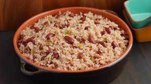

Rice and Beans

Description
Rice and beans is the staple food of Belize. It is both affordable
and makes up a complete protein even though it is vegan; not to mention,
it is very delicious.
Ingredients
- White rice
- Red kidney beans
- Coconut oil
- Salt
- Water
Steps
- Add coconut oil to pan and raise to temperature
- Add rice and cook until done
- Boil beans in water until cooked
- Add beans to rice
- Salt as needed